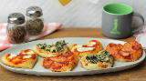

Samosa
Price
R86.99
serving size:
30
Informatiom
Asamosa is a fried South Asian with a savoury filling, including ingriedienta such as spiced potatoes, onions, peas, meant or fish.It ia made into different shapes, inclusing triangluar, cone or crescent, depending on the region.Samosas are a popular entee, appetizer or snack in the cuisine of South Asia, the Middle East, Central Asia, East Africa and their South Asian diasoras.
Extra add on to meals
vegetables
mince
cheese
chilli
peas
potatoes